アサギ
第6〜7章・試作03 · ロクを参考に鼻筋と鼻先を簡潔な線で表現ダーマの大工見習い。承認済みの元画像v2から、頭と胴を分けた8方向SVGを制作しました。
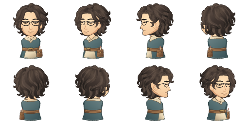
人型の頭・胴と、モンスターの全身を8方向のコードで描き、ゲームの表示方式で確認します。
ダーマの大工見習い。承認済みの元画像v2から、頭と胴を分けた8方向SVGを制作しました。

2026-11-07まで本編の主人公でした。頭と胴の合成シートを使用する従来方式で、比較用に残しています。
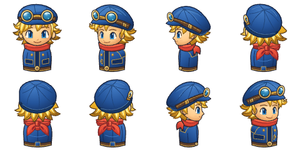
2026-11-07から第1～3章・第4～5章の主人公です。頭と胴を分離して表示します。試作02の画像は v02/ に保存しています。
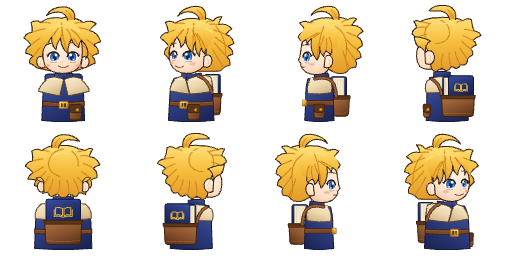
頭と胴を分離して表示します。下の画像は比較用の合成です。
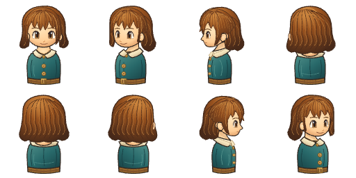
大工見習いの少年。頭と胴を最初から分離して制作しました。
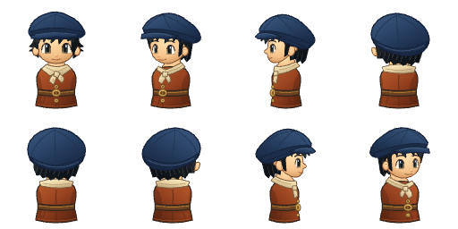
料理見習い。頭と胴を分離し、帽子のひだと首布の結び目を方向別に描いています。
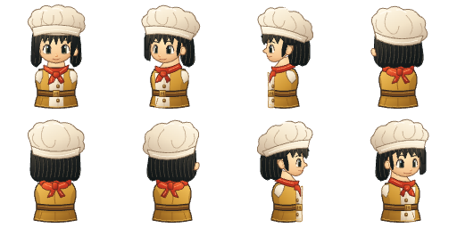
村の若者。短い髪の流れと生成りの襟を描き、頭と胴を分離しています。
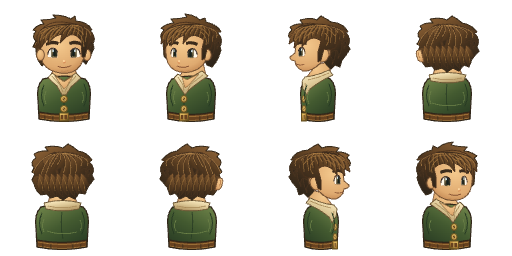
村の長老。額と目元、白髪と折り返した襟を描き分け、頭と胴を分離しています。
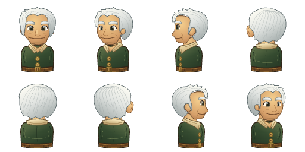
船乗り。帽子と短髪、口ひげ、金色の縁取りを描き、頭と胴を分離しています。
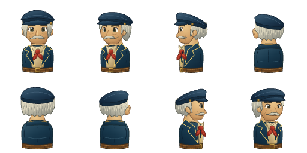
鍛冶職人。頭と胴を分離し、第4～5章の3D比較ページで確認します。
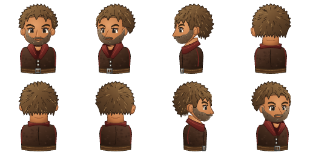
鉱夫兼炭焼き。頭と胴を分離し、第4～5章の3D比較ページで確認します。
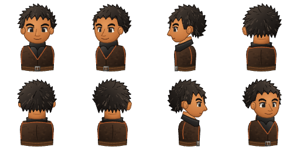
町へ帰る住民。頭と胴を分離し、第4～5章の3D比較ページで確認します。
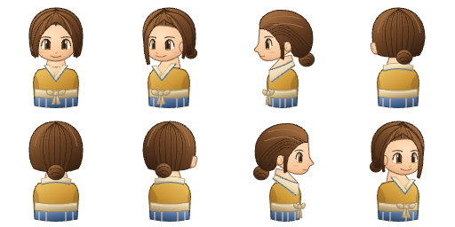
竹林の社守り。頭と胴を分離し、第4～5章の3D比較ページで確認します。
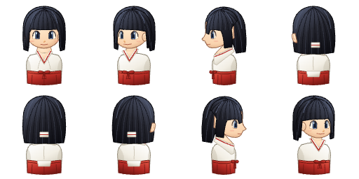
薬草の知恵を持つ住民。頭と胴を分離し、第4～5章の3D比較ページで確認します。
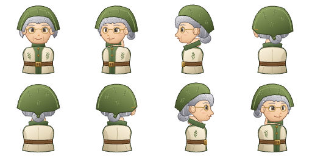
鉱山町の住民。頭と胴を分離し、第4～5章の3D比較ページで確認します。
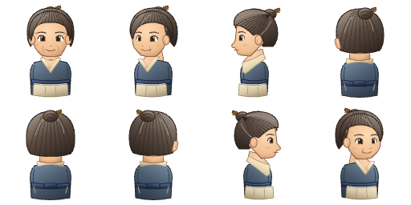
鉱山町の住民。頭と胴を分離し、第4～5章の3D比較ページで確認します。
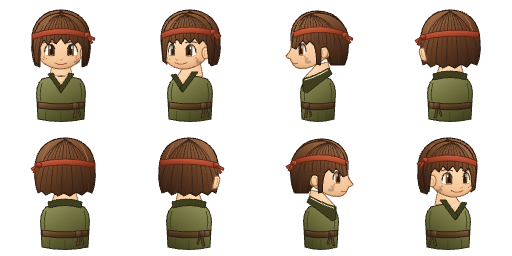
A・B 2ポーズの8方向シート。本編と同じ表示方式で比較します。
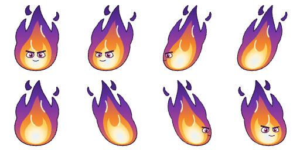
A・B 2ポーズの8方向シート。本編と同じ表示方式で比較します。
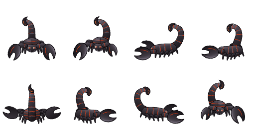
A・B 2ポーズの8方向シート。本編と同じ表示方式で比較します。
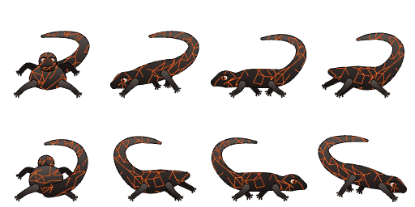
頭（2つの頭で共用）と胴の8方向シート。本編の竜のリグ（3Dの首・翼・尾）で比較します。
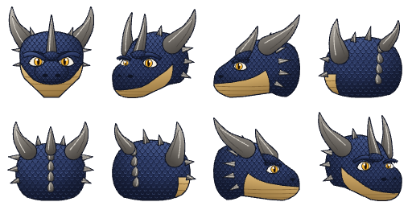
海を渡るときは灰紫の翼で羽ばたき、着地すると翼を背中に畳んで歩きます。
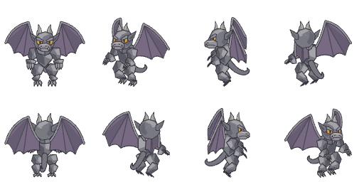
平たい岩の下から金色の目をのぞかせ、赤褐色の大きなハサミを構えます。
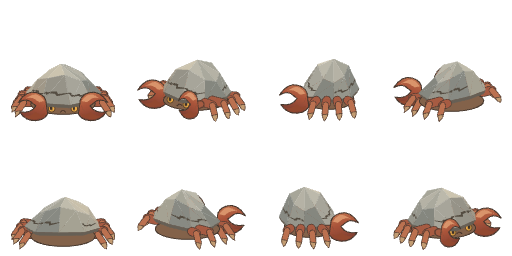
層状の岩の角と割れた蹄。通常姿勢から、頭を下げて踏ん張ります。
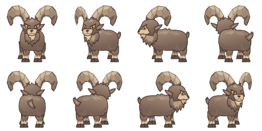
最初のモンスター試作。全身シートA・Bを交互に表示します。
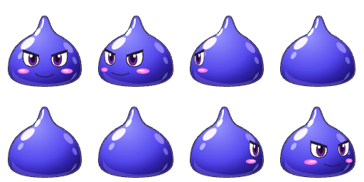
長い耳、紺色の体、紫の翼と黄色い目。体の大きさを保ち、翼を描き替えて羽ばたきます。
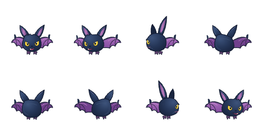
丸い灰色の体、大きな前歯、ピンクの耳としっぽ。通常姿勢と軽くかがむ姿勢を切り替えます。
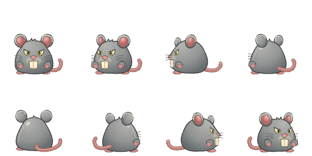
垂れた目と泥のしずく、頭と足元の草。接地を保ちながら泥の体が沈み込みます。
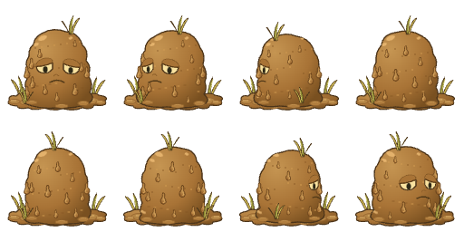
白い胴体、青い陰影、巻き上がる触腕と吸盤。腕を寄せる／広げる動きと浮遊を確認できます。
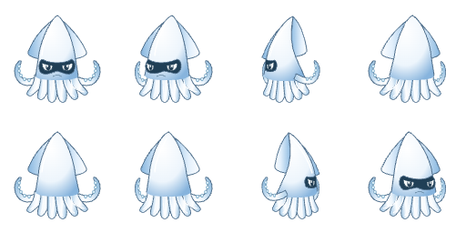
インベントリ・ホットバー・ドロップで使うアイコン。今のemoji表示と並べて比較します。
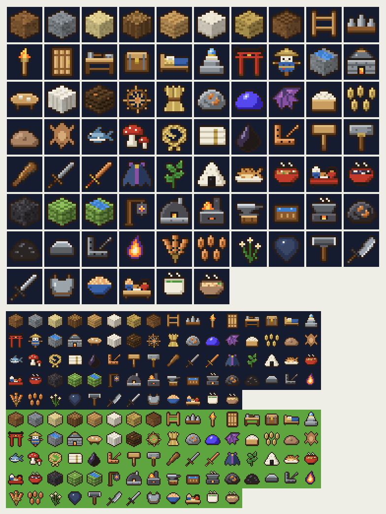
かかし・鳥居・柵・かまど・稲など第1～3章の設置物と、坑道灯・炉・金床など第4～5章の設備を作り直しました（両ゲームへ移植済み）。今の本編の形と並べて比較します。
3D比較のページはStudioの compare/ にあり、以前の画像は references/ に置いています。ページは本編のリグや設置物のコードを、このStudioのサーバーが読み取り専用で配るゲームのフォルダ（games/ch1-3/・games/ch4-5/）から読みます。ゲームの開発サーバーは不要ですが、各ゲームで npm.cmd install 済みである必要があります。